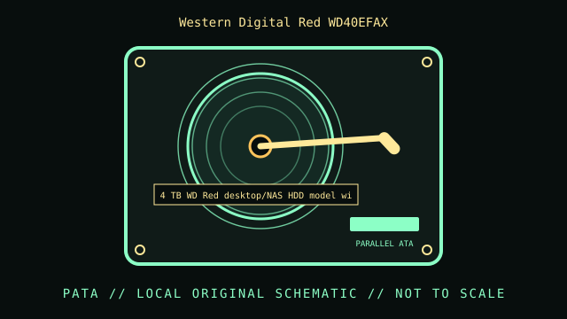

[ INDIVIDUAL COMPONENT // HARD DISK DRIVE ]
Western Digital Red WD40EFAX
4 TB WD Red desktop/NAS HDD model with device-managed SMR. This record is limited to the exact model and documented variant; related model numbers, revisions and capacities can have different interfaces and specifications.

IDENTIFICATION: Match the complete label, suffix, firmware and drive inquiry with the cited model documentation. Do not infer sector format or recording method from product family alone.
Verified model specifications
| Dedicated catalog subcategory | SMR SATA drives |
|---|---|
| Exact model | Western Digital Red WD40EFAX |
| Product generation | 4 TB WD Red desktop/NAS HDD model with device-managed SMR |
| Form factor | 3.5-inch desktop; this classification is not a dimensional drawing. |
| Interface | SATA 6 Gb/s family. |
| Capacity, performance, sector / recording details | 4 TB; 5400 RPM class and 256 MB cache in the WD40EFAX specification listings. WD’s published SMR SKU list identifies this exact part number as SMR; do not generalize to all WD Red or Red Plus models. |
| Compatibility | SATA host, but sustained random writes, RAID rebuilds and ZFS resilvering can differ substantially from CMR. Confirm workload compatibility and firmware behavior before integrating into an array. |
Handling, service & preservation
- Do not remove power during extended write recovery or cache flush. When retiring, sanitize using a method supported by the drive and verify the destination copy before erasure.
- Photograph the full label, board marks, connectors, jumpers/carrier, and date/firmware codes before service; retain the exact model suffix with collection metadata.
- Never open a hard drive outside a qualified clean environment. Stop repeated power-on attempts if the unit clicks, drops offline, or develops read errors.
- Preserve source data by making independent copies and validating checksums; SMART/self-tests cannot guarantee reliability. Distinguish measured condition from manufacturer specifications.
Model-specific source
- Western Digital published SMR SKU list and WD Red model documentationWD’s SMR SKU sheet identifies WD40EFAX as SMR; this is a model/revision-specific distinction, not a blanket statement about every WD Red family member.
- Western Digital WD Red NAS HDD product brief (manufacturer PDF)Manufacturer product reference; confirm WD40EFAX, not a later Red Plus model, against the cited SMR SKU sheet.
For variants with family manuals, use the model-specific table and document revision that matches the drive label.